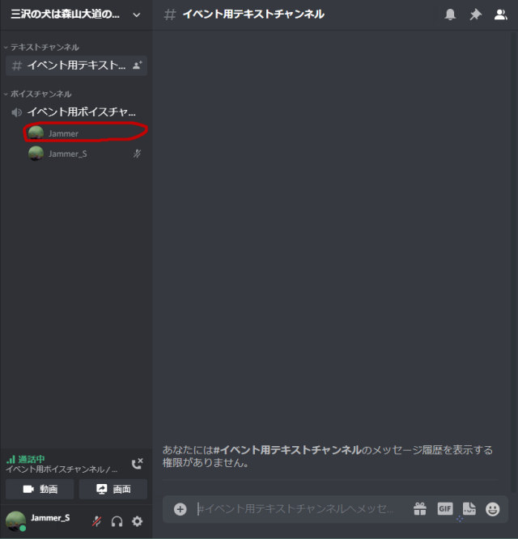
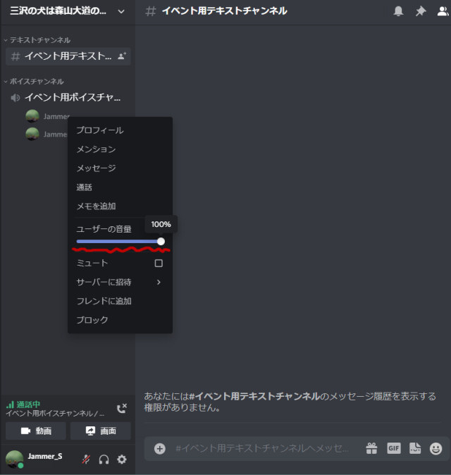

ユーザー個別ボリューム調整のやりかた（PC編）
Discrodのボイスチャットで話していて特定の人のボリュームが大きい、または小さいという場合は、個別に音量の調整を行なうことができます。
まず画面左にあるボイスチャットチャンネルの中の、音量を調節したい人の名前の上で右クリックします。

すると下図↓のようなドロップダウンメニューが出ると思うので、その中の「ユーザーの音量」スライダーを左右に動かして、音量を調節します。
音量はアプリ版のDiscrodの場合は±100%と広い範囲で調節が可能です。
Web版のDiscrodの場合は-100%と減音方向での調整しかできませんので、音量の小さい人がいた場合は、Discordの設定かOS等の設定でマスターボリューム自体を上げ、その後、音が小さい人以外のユーザーの音量を全員下げる方向で調整します。
